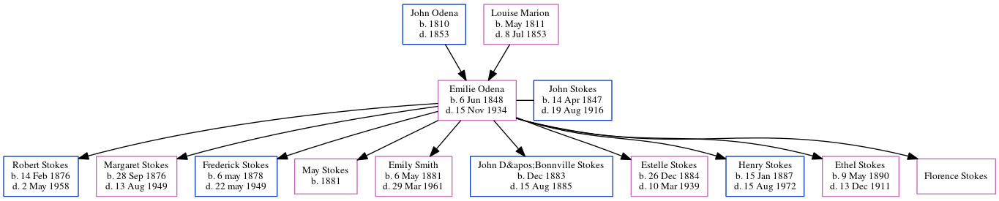

Emilie Mae Stokes (née Odena) 1848 - 1934
[ Home ] | [ Calendar ] | [ Surnames Index ] | [ Census Index ] | [ Family History ]The child of John Odena and Louise Marion, Emilie Odena, the great-great-grandmother of Michele Copp (née Phillips), was born in Charleston, Charleston County, South Carolina, USA on Jun 6, 18481,2,3,4,5,6,7,8 and, and was orphaned in 1853 by the death of both parents in that year her.
She married John Stokes (a virginia philips told me that he owned a big grocery store and later a vinegar works. his last business was stokes marble company with whom she had 10 children: Robert Marion, Margaret Louise, Frederick William, May, Emily May, John D'Bonnville, Estelle Pauline, Henry Foster, Ethel Ann and Florence) in Atlanta, , Georgia, USA in May 24, 1870 (Rev. Father Cullinan)During her life, she was living in St Michael and St Phillip, Charleston, South Carolina in 18501; in Atlanta Ward 2, Fulton, Georgia in 18602 and in 18703; at 593 Cherokee Ave, Atlanta, GA USA from 1894 to 1934; in Black Hall, Fulton, Georgia in 19004; in Atlanta Ward 7, Fulton, Georgia in 19105 and in 19206; in Atlanta, Georgia, USA in 192412; in Atlanta, Fulton, Georgia in 19307; and in West End13. (Sale of plot of land.)
She died on Nov 15, 1934 at 593 Cherokee Ave, SE Atlanta GA8,9,10,11 and was buried in Atlanta, Fulton County, Georgia after Nov 15, 19348,10.
Parents
- John Hypolite was born in 1810
- Louise Marie was born in May 1811
Children
- Robert Marion was born on Feb 14, 1876
- Margaret Louise was born on Sep 28, 1876
- Frederick William was born on May 6, 1878
- May was born in 1881
- Emily May was born on May 6, 1881
- John D'Bonnville was born in Dec 1883
- Estelle Pauline was born on Dec 26, 1884
- Henry Foster was born on Jan 15, 1887
- Ethel Ann was born on May 9, 1890
Citations
- 1850 United States Federal Census Online publication - Provo, UT, USA: The Generations Network, Inc., 2005.Original data - United States of America, Bureau of the Census. Seventh Census of the United States, 1850. Washington, D.C.: National Archives and Records Administration, 1850. M432,
- 1860 United States Federal Census Online publication - Provo, UT, USA: The Generations Network, Inc., 2004.Original data - United States of America, Bureau of the Census. Eighth Census of the United States, 1860. Washington, D.C.: National Archives and Records Administration, 1860. M653, 1
- 1870 United States Federal Census Online publication - Provo, UT, USA: The Generations Network, Inc., 2003.Original data - 1870. United States. Ninth Census of the United States, 1870. Washington, D.C. National Archives and Records Administration. M593, RG29, 1,761 rolls. Minnesota. Minnes
- 1900 United States Federal Census Online publication - Provo, UT, USA: MyFamily.com, Inc., 2004.Original data - United States of America, Bureau of the Census. Twelfth Census of the United States, 1900. Washington, D.C.: National Archives and Records Administration, 1900. T623, 1854 rolls.
- 1910 United States Federal Census Online publication - Provo, UT, USA: The Generations Network, Inc., 2006. For details on the contents of the film numbers, visit the following NARA web page: NARA.Original data - United States of America, Bureau of the Census. Thirteenth Census of the Unit
- 1920 United States Federal Census Online publication - Provo, UT, USA: MyFamily.com, Inc., 2005. For details on the contents of the film numbers, visit the following NARA web page: NARA. Note: Enumeration Districts 819-839 on roll 323 (Chicago City.Original data - United States of America
- 1930 United States Federal Census Online publication - Provo, UT, USA: MyFamily.com, Inc., 2002.Original data - United States of America, Bureau of the Census. Fifteenth Census of the United States, 1930. Washington, D.C.: National Archives and Records Administration, 1930. T626, 2,667 rol
- U.S., Find A Grave Index, 1600s-Current Ancestry.com Operations, Inc.
- Georgia Deaths, 1919-98 Online publication - Provo, UT, USA: The Generations Network, Inc., 2001.Original data - State of Georgia. Indexes of Vital Records for Georgia: Deaths, 1919-1998. Gerogia, USA: Georgia Heatlh Department, Office of Vital Records, 1998.Original data: State
- Georgia, Deaths Index, 1914-1940 Ancestry.com Operations, Inc.
- Newspapers.com Obituary Index, 1800s-current Ancestry.com Operations Inc
- U.S. City Directories, 1822-1995 Ancestry.com Operations, Inc.
- Newspapers.com Obituary Index, 1800s-current Ancestry.com Operations Inc
Family Tree
Generated by ged2site. Last updated on Jun 6, 2024